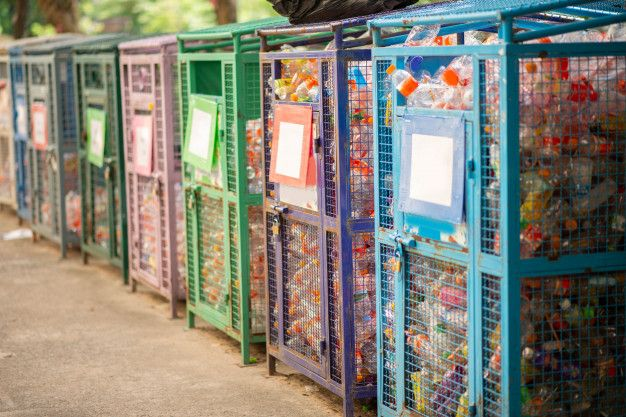

Bank sampah adalah inovasi berbasis masyarakat yang menggabungkan aspek lingkungan dan ekonomi. Melalui sistem ini, warga dapat menyetorkan sampah terpilah seperti plastik, kertas, dan logam, lalu mendapatkan imbalan berupa tabungan atau insentif. Konsep ini tidak hanya mengurangi timbunan sampah, tetapi juga menumbuhkan kesadaran kolektif akan pentingnya pengelolaan sampah.
Bank sampah berfungsi sebagai pusat edukasi sekaligus pengelolaan sampah komunitas. Ia membantu mengurangi volume sampah ke TPA, mendorong kebiasaan memilah sampah, dan memperkuat solidaritas warga dalam menjaga lingkungan.
Keberhasilan bank sampah membutuhkan dukungan kebijakan, pelatihan, dan sarana seperti tempat sampah terpilah. Partisipasi aktif masyarakat menjadi kunci, sementara dukungan pasar untuk hasil daur ulang memastikan keberlanjutan program.
Bank sampah bukan sekadar solusi teknis, melainkan gerakan sosial menuju gaya hidup berkelanjutan. Dengan kolaborasi semua pihak, pengelolaan sampah dapat lebih efektif dan berdampak positif bagi lingkungan sekaligus kesejahteraan masyarakat.
← Kembali ke Beranda